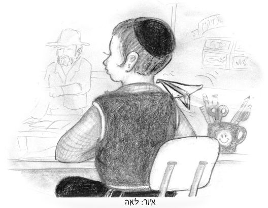

Barzilai’s Party

“Enough already!” I shouted. This was the third time that someone had thrown a paper airplane during the lesson. A quick glance behind me told me everything. It was him again, Shmuel.
Shmuel Barzilai was a freckled, cute kid, but a big troublemaker. His chutzpa astonished the teachers who didn’t quite get him. It seemed as though Shmuel was trying his utmost to justify his family name, Barzilai.
The toughness of iron (barzel) that he excelled in and his heart as hard as stone quickly turned him into a problem child. His clever antics along with his powerful stubbornness to succeed, explained his repeated annoyances.
“There’s nothing I can do,” I thought. “Class is almost over. Maybe next time Shmuel will find another victim …”
The teacher closed the book and told us to wait.
“In two weeks, we will be having our siyum-party for finishing the masechta. I want three of you who are responsible and organized to arrange the party in the best possible way.”
Excited whispering filled the classroom and after a few seconds, a few hands were waving.
“Moishy, Shimon and Sholom Dovber,” said the teacher. Yes! I had been picked!
“You are the representatives who will arrange the party. Anybody who has an idea should go over to one of these three boys.”
The teacher left the room and I rushed over to the other two boys. We were going to make the best party ever!
We spent the following days working hard to prepare for the party. We got a small sound system which would play lively songs. Dovber found cheap but nice disposable plates and Shimon ordered yummy baked goods from the neighborhood bakery.
I worked on the masterpiece, a giant decoration the size of an entire wall that would convey the central topic of the masechta. I worked on it together with my sister for a week until we achieved magnificent results. It was made up of pieces of sparkling stones, colored paper and gold and silver ornaments. I brought it carefully to school with Shimon and Dovber and left it in the school’s spacious bomb shelter.
Every day, when school was over, I would go down and make sure all was well with the huge decoration, wipe off invisible dust and smile proudly.
Two days before the party, I went downstairs as usual and … couldn’t believe my eyes. Little pieces of stone were scattered over the floor mixed with gold and silver flecks and pieces of oaktag. “Someone ruined the whole thing!” I screamed and burst into tears.
It wasn’t hard to come up with who did it. Small paper airplanes scattered on the floor said it all. It was that Shmuel again.
My eyes blurred with tears made it difficult to see the way out, but my feet just took me to the door and I found myself entering the Tzivos Hashem clubhouse, right in the middle of the weekly D’var Malchus class. I sat down in the back with my head between my hands, but I heard every word.
“The tenth of Teves is the day the siege against Yerushalayim began,” Meir was saying. “The fast established on this day is so precious, that if the tenth would fall out on Shabbos, we would still fast, just like Yom Kippur.”
“But why?” asked Mendy from the front row. “Not much happened on this day … It’s just that the siege began. The wall wasn’t even breached…”
“Good question!” said Meir, “but that itself is the answer. The point of the siege was to wake up the Jewish people, to get them to do teshuva. If they would have done teshuva, we would have been spared the churban and galus.
“In those days, the Jews did not get the message. When they did not do teshuva, the wall was breached, and the Beis HaMikdash went up in flames.
“But today, we can fix that! Do you know how?” Meir asked, smiling at the wondering faces of the children.
“The siege was at first compared to iron, because it represented the destruction of the Beis HaMikdash where iron could not be used. The fast teaches us that the tikkun has to do with iron because iron will be used in the third Beis HaMikdash! By using iron in a holy way, with stubbornness, strength and force, we will be able to bring the Geula!”
A flash of understanding struck me. I could picture the paper airplanes flying around and torn pieces of paper on the floor of the bomb shelter. In the background I could see the freckled face of Shmuel and I knew just what I had to do.
I ran to get Sholom Dovber and Shimon and briefly told them my idea. We were soon walking quickly to Shmuel’s house.
“Barzilai Family” was written on a brown wooden door which had old and new stickers on it. The door opened and there was Shmuel looking mighty surprised.
After a few words of explanation and a short point from the shiur, he smiled broadly. He went with us to the bomb shelter and on the way, he came up with original ideas for the party.
We were happy to have included him. The iron powers he had, his tremendous stubbornness and focus on the goal gave us many additional ideas that came to fruition in the few remaining days. Not surprisingly, Shmuel was able to have the decoration fixed by an artist within just one day and he added his own artistic touches.
No one in our class will forget that party because the Shmuel of today, with his outstanding behavior, reminds everyone. Every day.
Beis Moshiach (staff). "Barzilai’s Party." Beis Moshiach, no. 1146 (December 20, 2018).